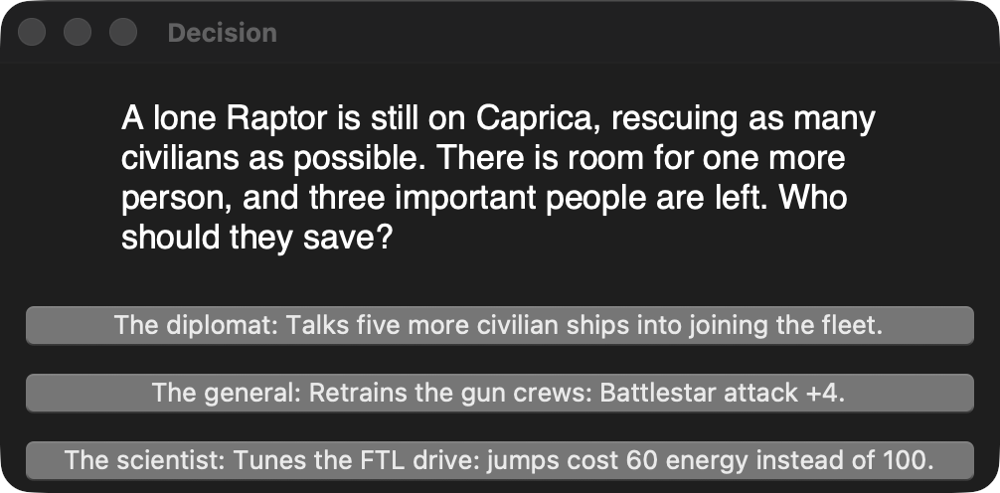
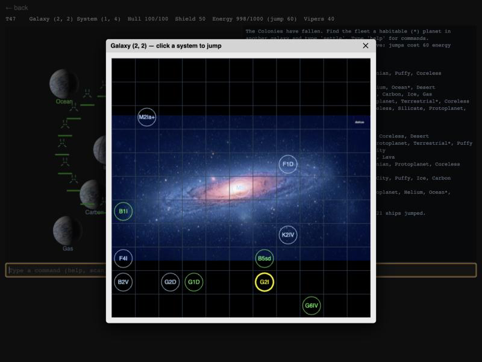

BattleTrail
Completion ▰▰▰▰▰▱▱▱▱▱ 50% · Full loop, but only one event
BattleTrail is my Battlestar Galactica fan game, a mix of Oregon Trail and real-time fleet tactics. The Colonies have fallen, and you command the last Battlestar with a ragtag fleet of civilian ships. Your job is to find them a new home before the Cylons wipe you out. I started it in 2017 in Kotlin with a JavaFX front end, using a domain-driven, component-based design. That's mostly where I worked out how to structure a simulation.
You play by typing commands into a little console: scan a galaxy for habitable planets, jump X,Y to make an FTL jump, launch and recall Viper squadrons, and finally settle. On the DRADIS screen you click your ship, then click space to move it or a Basestar to attack. Every jump costs energy, Cylon Basestars sweep the galaxies looking for you, and every so often you get an Oregon-Trail-style decision with real consequences. The ship's computer even reads its lines aloud in a robot voice.
In 2026 I dusted it off and ported it to Go with Tk. It now has a tested, UI-independent game package, and lots of old bugs are fixed: win/lose conditions, fleets following FTL jumps, energy and shields. The same game package also runs in the browser via WebAssembly, with a DOM front end in place of Tk.
Features
- An 11×11 grid of galaxies, each an 11×11 grid of solar systems, generated from a fixed seed, with star classes and 15 planet compositions.
- Typed command console:
scan,jump X,Y,launch,recall,settle,help. - Real-time DRADIS screen: click a ship, click space to move, click a Basestar to attack.
- FTL jumps that cost energy, strain the hull and take every Colonial ship in the system along.
- Viper squadrons that launch over time and fly back to land in the hangar.
- 10 Cylon Basestars that sweep random systems hunting for the fleet.
- Shields, hull, energy regen, and hull repairs only while no enemy is around.
- The opening Raptor choice: save the diplomat, the general or the scientist.
- Win by settling a habitable planet; lose the Battlestar or the last civilian ship and it's over.
- The ship's computer reads its lines aloud in a robot voice.
Under the hood
The Go port keeps notes on where the Kotlin original was wrong. From go/game/world.go:
s, c := math.Sincos(deg * math.Pi / 180) // the Kotlin version fed degrees into sin/cosAnd the planet generator in BattleTrail/src/game/entities/Planet.kt rolled random.nextInt(14) over 15 compositions, so Terrestrial, the one you want, could never appear. The Go test says so (go/game/game_test.go):
for _, want := range []string{"M", "Terrestrial"} { // unreachable in the Kotlin versionThe Cylon AI in go/game/game.go is a shuffled checklist: each sweep a Basestar pops a random unsearched system and only jumps there if it finds Colonial ships.
i := g.r.Intn(len(g.toSearch))
sys := g.toSearch[i]
g.toSearch = append(g.toSearch[:i], g.toSearch[i+1:]...)
if g.count(sys.Loc, Colonies) > 0 {
b.Energy -= 100
b.Loc, b.P, b.Target = sys.Loc, g.randVec(), nilThe 2017 voice was MaryTTS with a robot filter (GameTTS.kt, val effects = "Robot(Amount=50)"). The Go port just shells out to macOS (go/speech.go):
voice = exec.Command("say", "-v", "Zarvox", text) // robotic, like the old MaryTTS effectAnd a Tk war story from go/main.go:
// dialog is a plain Tk window instead of tk_messageBox: the native macOS alert
// runs a nested event loop that the game ticker re-entered, crashing the app.Ideas & inspirations
Battlestar Galactica (the 2003 series) is everywhere: Basestars, Raiders, Vipers, Raptors, DRADIS, Caprica. The DRADIS icons are fan-made Photoshop files by David Gian-Cursio, whose read-me in BattleTrailUI/RawResources recommends the "Visitor" font as close to the show's. The Oregon Trail part shows in ChoiceEvents.kt: the lone Raptor on Caprica with room for one more person. The Kotlin code also has an unused PartyMember enum (Diplomat, General, Scientist) and a commented-out addPartyMember, so a party/crew system with levels was planned. There are no other notes or TODO files.
Where it started, where it ended
The first commit was 8 November 2017; within a day there was realtime movement on DRADIS and text-to-speech, then the first choice event, "first steps towards rts battles", a "ddd plus component based architecture" rewrite, solar system navigation and finally "basic combat" on 19 November 2017. Then nothing for nine years. In September 2026 I ported it to Go with Tk, fixed win/lose, fleet following, shields and world-gen bugs, and added a WebAssembly browser front end. The idea stayed the same; the 2026 version is just the first one you can actually finish.
State of the repo
Last activity is 1 October 2026 (the wasm front end and a publish script). The Go tests pass. The Kotlin version is still in the repo and has a run.sh, but it's frozen. What's missing is most of the Oregon Trail half: there is exactly one choice event, at the start, and no resources besides energy, no crew, no random events on the trail. Raiders and boarding exist as Kotlin classes but not in the Go game. I'd put it at about half of what I had in mind.
Is it a real game?
Playable demo. There is a full loop with a win state (settle a habitable planet away from home without Cylons present) and two lose states (Battlestar destroyed, all civilians gone). One run is a matter of scanning, jumping and a few fights; after the opening choice nothing new happens, so it runs out of surprises quickly.
Screenshots



Latest updates
- 2026-09-30 Port game to Go with Tk and fix gameplay bugs
- 2017-11-19 Basic combat
- 2017-11-18 Hardcore ;)
- 2017-11-18 Enabled solar system navigation
- 2017-11-16 More refactoring
- 2017-11-15 DDD plus component-based architecture